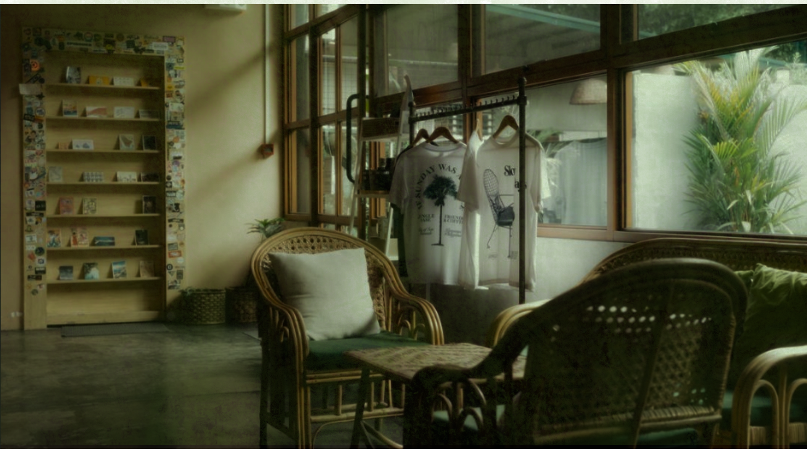

Top 4 Must Visited Local Coffee Shops Around
Pampanga!

Pampanga!
Jungle Base Coffee Is A Peaceful Spot Where You Can Enjoy Great Coffee While Being Surrounded By Nature. Located In Balibago Basa, San Fernando, Pampanga, This Coffee Shop Offers A Unique Blend Of Urban Comfort And Natural Atmosphere. Whether You Want To Unwind After Work Or Have A Break From The Busy City Life, Jungle Base Coffee Is The Place To Be.
Location: Macarthur Highway, Cor Montero, San Fernando, 2000 Pampanga
Siglo Poblacion Offers A Unique Mix Of Heritage And Coffee Culture. Located In The Heart Of Angeles City, This Coffee Shop Lets You Bask In Time With Its Vintage-Inspired Interiors. Sipping On A Warm Cup Of Their Rich Specialty Brew In Poblacion Coffee Shop Is Like Taking A Journey Through The City's Rich Cultural Heritage. The Cozy Memory Lane, Siglo Poblacion Is The Perfect Spot To Relax And Enjoy A Great Cup Of Coffee.
Location: 1277 Miranda St. Cor Sto. Entierro St. Angeles, 2009 Pampanga
Hygge Lifestyle Café Brings A Touch Of Scandinavian Coziness To Angeles City. Inspired By The Danish Concept Of 'hygge,' Which Means Comfort And Warmth, This Café Offers A Minimalist Yet Welcoming Atmosphere Perfect For Relaxing With A Cup Of Coffee. Whether You're Looking To Unwind, Study, Or Catch Up With Friends, Hygge Lifestyle Café Is The Ideal Spot To Enjoy A Peaceful, Laid-Back Vibe.
Location: Macarthur Highway, Cor Montero, San Fernando, 2000 Pampanga

Moon Café Is A Cozy Coffee Spot That Brings An Artistic And Laid-Back Vibe To Angeles City. With Its Creative Decor And Friendly Atmosphere, It's The Perfect Place To Chill, Sip On Some Coffee, And Unwind. Whether You're A Solo Coffee Drinker Looking For A Quiet Corner Or You're Meeting Up With Friends, Moon Café Offers A Warm And Welcoming Environment That's Hard To Resist.
Location: 1277 Miranda St. Cor Sto. Entierro St. Angeles, 2009 Pampanga